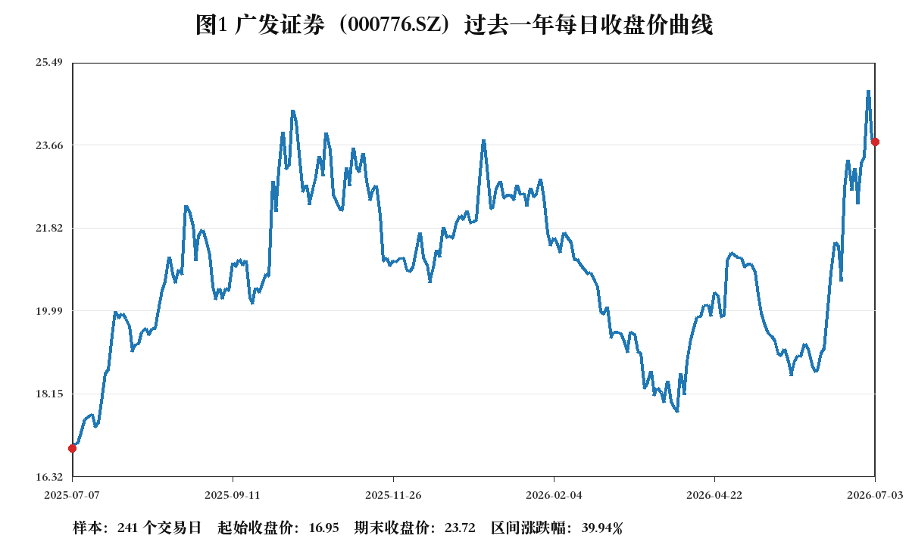
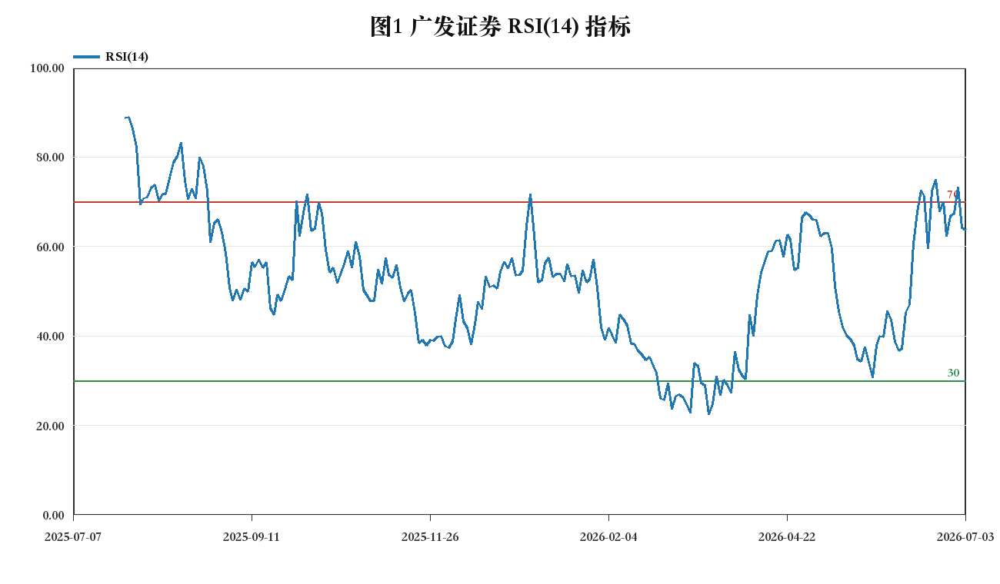
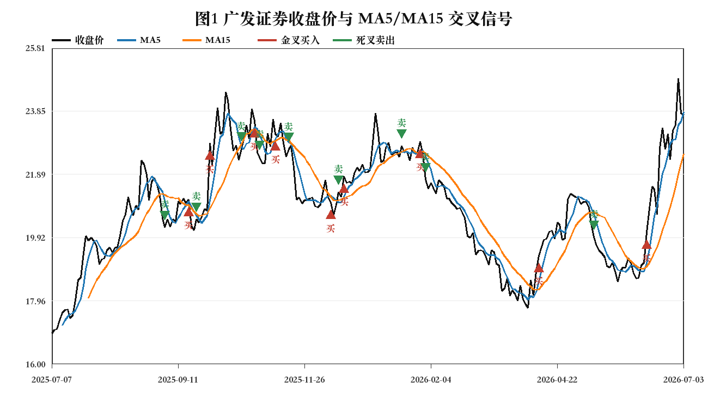
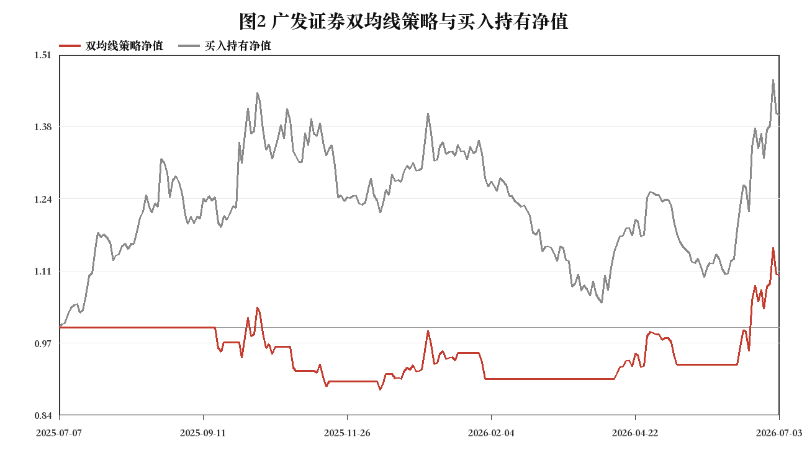
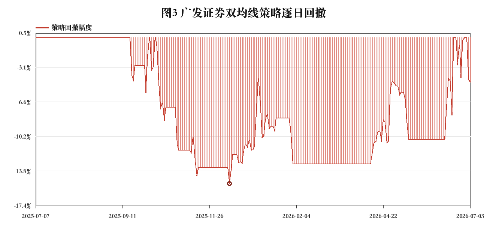
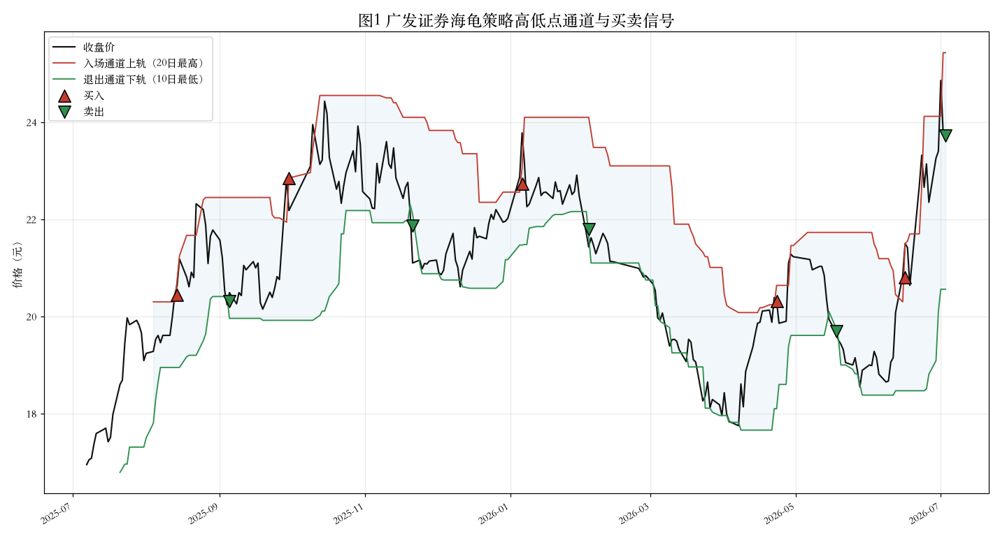
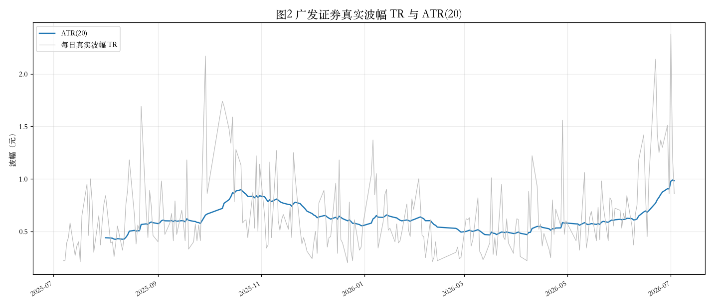
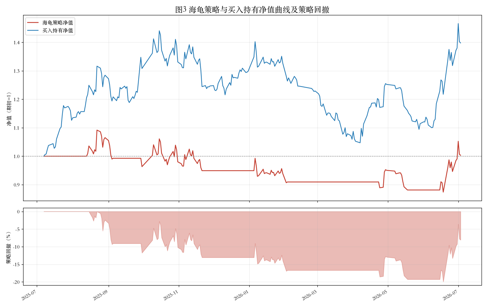
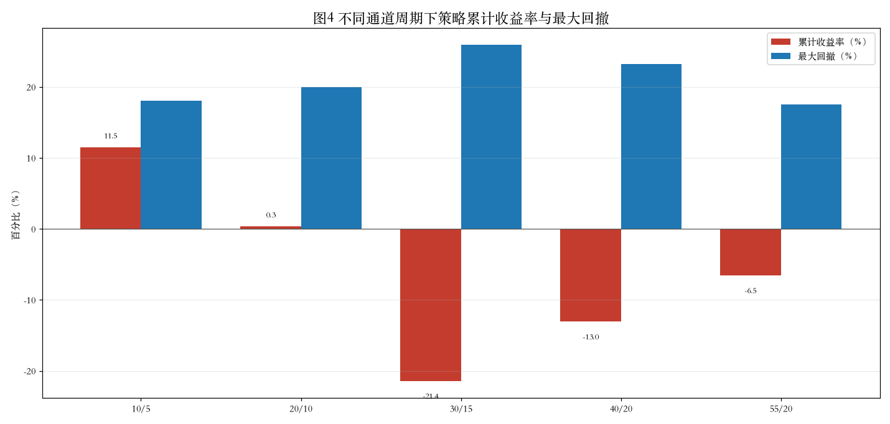

TASK2
技术指标计算与诊断分析
在原始行情数据基础上完成缺失值检查、描述性统计，并计算 RSI、MACD、布林带和 KDJ 指标。指标结果同步输出为 CSV，便于网页端复用。
--交易日
--最新收盘
--最后日期

TASK3
双均线策略回测
基于 5 日 / 15 日均线金叉死叉生成买卖信号，完成次日开盘成交回测，输出累计收益、最大回撤和夏普比率，并在广发证券、招商银行、贵州茅台上做多参数（5/15、5/20、10/30、20/60）对比。



TASK4
海龟交易策略
计算唐奇安通道与 ATR，按通道突破入场、跌破下轨或 2 倍 ATR 止损离场，完成含佣金印花税的回测，并对通道周期、止损倍数和股票类型（券商 / 蓝筹 / 高波动成长）做参数敏感性分析。




Interactive Dashboard
广发证券技术指标面板
数据来源于 TASK2 生成的公开指标 CSV。